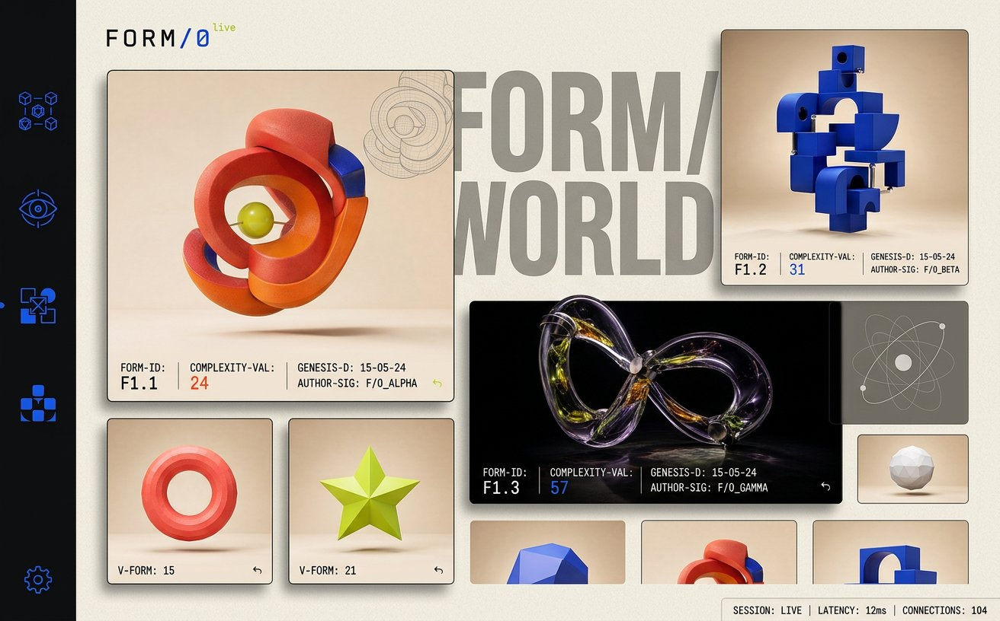
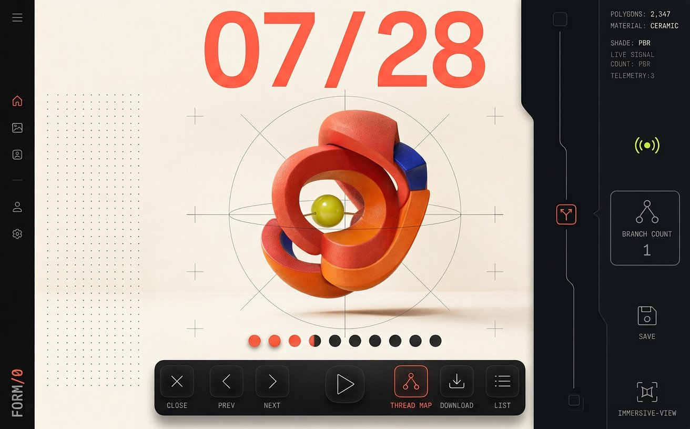
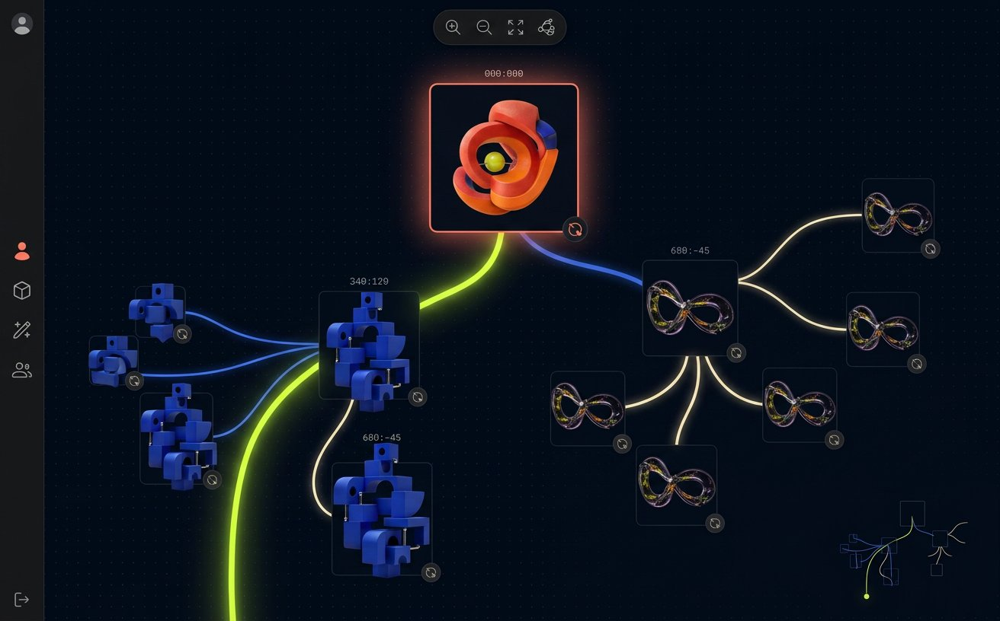
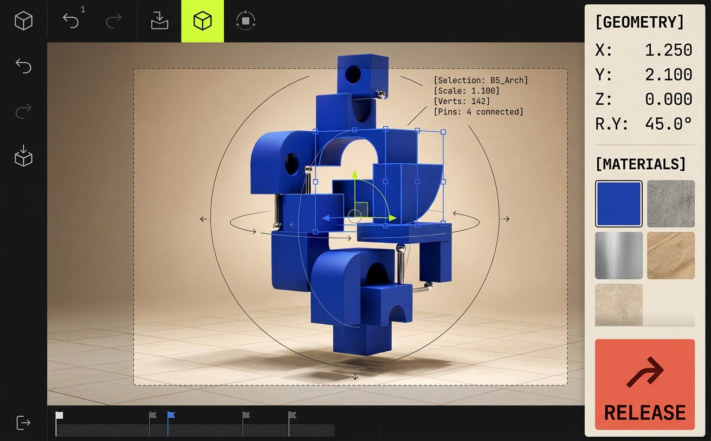

FORM/0 × image model
MAKE IT
MAKE IT
STRANGER.
The interactive mockups were pushed through an image-generation pass to exaggerate their strongest ideas: editorial scale, object-first composition, technical overlays, and more expressive spatial navigation.


